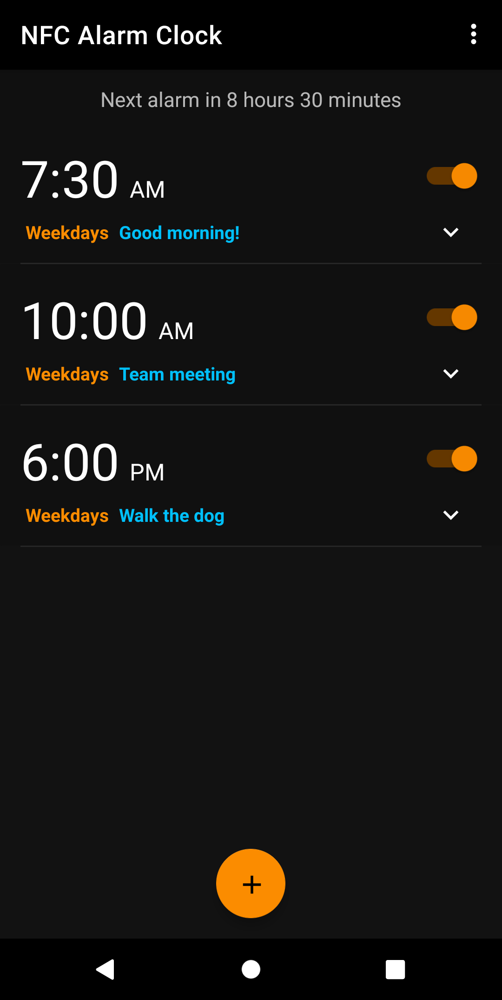
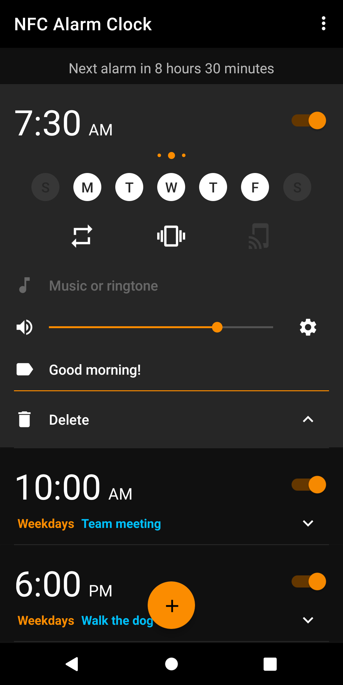
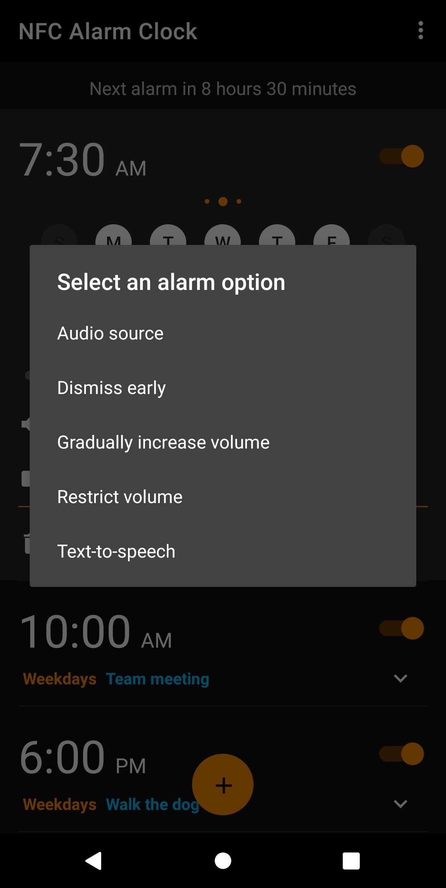
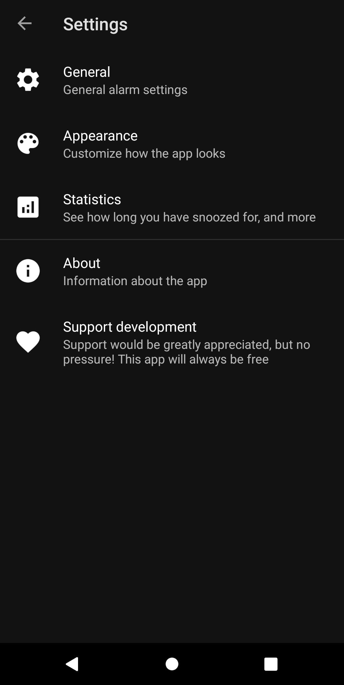
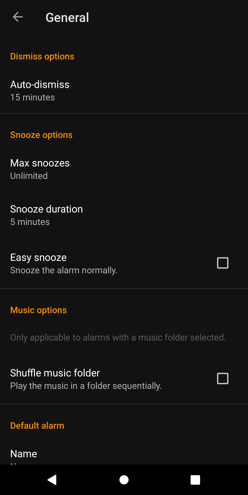
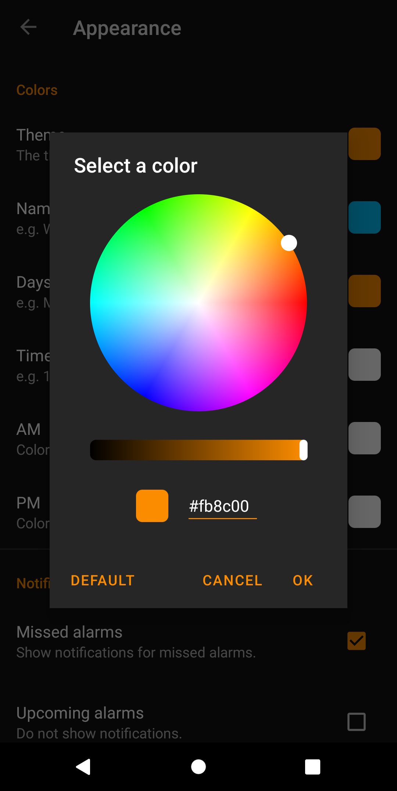
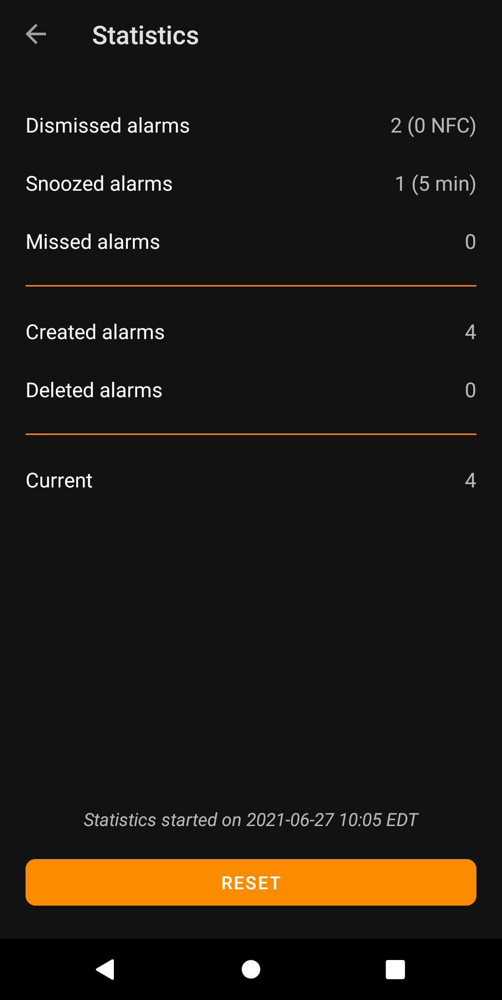
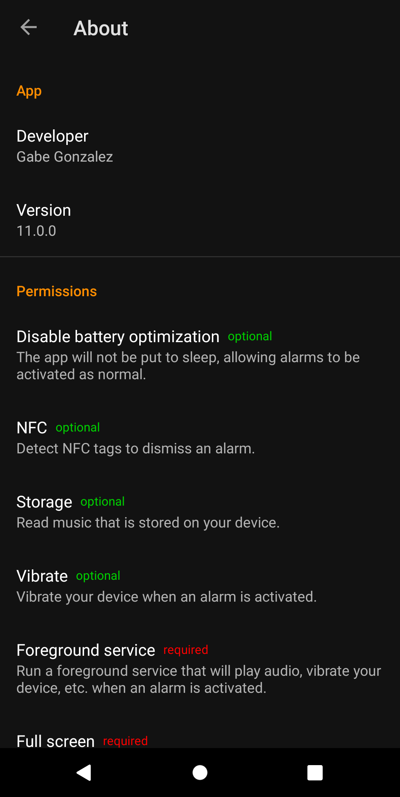

The NFC Alarm Clock app has a bunch of different features and ways to customize how the app looks. You can personalize it to make it look exactly like you want it!
This is the main screen of the app, where you'll be able to see all your alarms.
Click on an alarm to expand it.
Click on this button to tweak different alarm options.
This is the Settings screen where you can access all the different in-app settings.
Set default alarm settings like when to automatically dismiss an alarm, how long to snooze for, etc.
Change the appearance of the app such as the different colors to use, the style of the day buttns, and more.
View statistics such as how many alarms you've dismissed, how long you've snoozed for, and more.
See who developed the app (Me!), the current version of the app you are using, and a description of all the permissions the app you can use.
If you'd like to support developement of the app, you can click on this, but this is totally optional. No matter what, this app will always be free and have no ads!